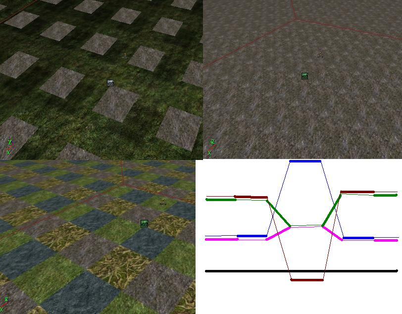

Daid303
Welcome, I'm Daid, this is a page about me, from me
Personal info
I'm Daid303, Daid for short. My email address is sneakeye_@hotmail.com, don't feel afraid to contact me there, just mention where you found my email. No, I don't run the unreal wiki. (I got that question a few times now already, and I don't have a clue why. I just run into this place from time to time)
I code for UT, UT2003 and sometimes Tactical ops. I've also weak modeling and skinning skills, so I can do just about everything. Yeah, also mapping, but I never really made any good map.
Coding stuff
Done
A no blood mutator for UT2003, but I have no idea where it went 
In progress
And I'm also working at the [Ultimate Survival] team, a paintball mod for UT2003.
Ultimate Droids (look furter down)... maybe make a subpage of it?
Finaly learned C++, doing alot of C++ these days. Found out why automatic typecasts are irritating. Clamp is for ints, not for floats. (FClamp is for floats)
Ultimate Driods
Version 1.3 released. (UT2003 only)
This... mod/program? still don't know what to call is. But anyway you can build droids with it. I've made this because I wanted to make something with the runtime engine. And while being busy I thoughed lets add another chalange. So I said to myself "Don't subclass Gameinfo or PlayerController or Pawn" and... I didn't  It was quite a trick for me because I was used to just subclass what you need. And that USUALY started with a gameinfo.
It was quite a trick for me because I was used to just subclass what you need. And that USUALY started with a gameinfo.
The version 1.3 has alot of changes including:
- 2 design envirments, 1 with and 1 without gravatie.
- Challange maps. Maps designed for more then 1 droid.
- A few new components and parts including:
- Rotation Sensor
- Absolute
- Add Around (0.8 + 0.3 = -0.9)
- A timer (copies it's input value onces every 0.1 of a sec)
- Import/export functions.
- Ajustable mousespeed.
- And more....
More info here:
Sorry no link at the moment.
Because it's still unclear if I can contiue with the Runtime engine, I had to set out some kind of plan.
- 1st I'll mail licensing@epicgames.com to ask if they can look at what I have created and if they can tell me if it's a game.
- If it isn't a game, then I can just continue as I do now, and release it with the runtime engine.
- But if I can't continue like this, OR it's not sertain. (I don't have money for a lawyer
 ) Then i'll continue with Plan B
) Then i'll continue with Plan B
Plan B
Plan B is basicly port it to as many unrealengines as I can think of. Every unreal engine that has karma stuff and exportable code can run the 'mod'. This sounds quite easy but could be a lot of work.
I have done some thinking already, and this is what I know:
- Textures can easly be created and ported.
- Maps can easly be ported, because you can simple export a map, and import it again in the UEd of the other game. (will need 100% custom made tex)
- Code is 100% runtime compattible and so will be 99% compatible for most engines.
- Not all engines have Karma stuff, so some will be out of luck.
What I still don't know (but some people here probly do):
- What games (running the UEngine) can be modded? And do they have karma stuff?
- Any idea how to make static meshes with karma properties portable?
- I might need some help to get it to some of the games (I don't own every game that's out there)
If this plan won't work then i'll simple make it a UT2003 mod. But it will stay 100% none UT2003 (as in I won't be using any UT2003 classes)
Discussion
Daid303: Removed alot of stuff, stored in my head, not needed anymore (unless someone else wants it?)
Anyhow, i'm trying something new. Destroyable terrain. No not destroyable objects, not terrain that you can lower by shooting at it, but terrain where you can really blast holes in it, and then tunnel to another side.
Not possible you say? Well, I think it is. Basicly I had this idea, if you place 4 terrain infos, and make the quads visible 1 after eachother then you could lower 1 quad without lowering the ones next to it. There you have a hole. With even more terrain infos, and inverted terrain infos you could make the tunnels.
One if the problems is setting the quad visibilities, but I found out that I can simply remove the "const" in the editor, compile (without saving) and then access it with brush builders to set it to the right numbers.
AlphaOne: Wow, thats a nice hack. How much of it do you have working?
Daid303: Not much actualy, I kinda have a problem with it. The poketerrain doesn't act the same on all the terraininfos... Feel free to try to make it yourself.
AlphaOne: Now that I think of it I don't really understand what you're talking about. Could you possibly make an example in ued with all thequads properly set, and show us a screenshot?

Daid303: The upperleft picture shows just 1 terrain info, the right one are actualy 4 terraininfos, the lowerleft picture shows the same terrain infos with diffrent textures. The idea is that I can now lower 1 quad without moving the others around it.
Foxpaw: I don't see why you need 4 terrain infos. Can't you do it with just two? (one "floor" and one "roof" interlocking, and when tunnelled through they separate at the point you hit?
Daid303: Actualy, I need a total of 9. 4 for the top, 4 for the roof of the tunnel, and 1 for the floor of the tunnel. The idea is that you can have holes from the ground level to the tunnel level.
AlphaOne: I think it would be better if you illustrate with more screenshots. Try to show us what would happen AFTER some polygons were moved. Show us how you want holes from the ground level to the tunnel level.
Daid303: It's pretty hard to take screenshots from my head. It's still in the idea phase, it doesn't work yet. Anyhow I found out why the poketerrain acted diffrent on each terraininfo, it was basicly because I copy+paste them, and then they all used the same hightmap. And that gave wierd stuff.
I'll build a drawing from the side how my idea is, could take a while.
Daid303: Ok, updated the picture.
The green and darkred lines are the top terrain infos.
The pink and blue lines are the roof of the tunnel terrain infos.
The thin lines are invisible and so can be walked trough.
AlphaOne:  2D pictures are rarely good for describing 3D concepts. I'm opening UED so I can try to figure out how it might work. I just dont' see why u can't just use two terrain infos, one for the top, and one for the bottom of the 'cave'.
2D pictures are rarely good for describing 3D concepts. I'm opening UED so I can try to figure out how it might work. I just dont' see why u can't just use two terrain infos, one for the top, and one for the bottom of the 'cave'.
AlphaOne: No, I dunno man. It took me for ever to setup the invisibility of for terrain infos. I moved one poly up, and gave up. In the game for some reason other terrain infos moved up as well.
Foxpaw: I was thinking that originally, (that he'd only need two) but I think that what he wants is to have the ability to tunnel from the surface, underground, without disturbing the ground above the tunnel.
AlphaOne: I noticed that. I sill, however, can't understand how he wants it to work.
Daid303: Well, I still haven't been able to get it to work myself (I forgot how many times I messed up the terrain infos already) but in my head it can work. It's just hard to explain...